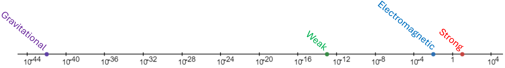

One morning I woke up thinking "I have been studying BSM models for a while, but do I really understand the backbone of the SM?" and thus this page was created.
Below you will find a collection of important values, tables, rules, and formulas used in (SM particle physics. These are not for QFT. I follow the structure of Griffiths's "Introduction to Elementary Particles."
Constants.
Special Relativity.
C, P, and T.
Decays and Scattering.
The ABC Model.
QED.
Electro and colordynamics of quarks.
Metric convention:
\[g_{\mu \nu }=\text{diag} (+1,-1,-1,-1) \]Scales of the interactions:
Fine structure constant
\[\alpha = \frac{e^2 }{\hbar c}=\frac{1}{137} \]Barns
\[1\;\text{b} =10^{-24}\;\text{cm} ^2 \]Lorentz factor
\[\gamma =\frac{1}{\sqrt{1-\frac{v^2 }{c^2 }}} \]Lorentz transformation (for primed frame moving in the positive unprimed $x $-direction):
\begin{align*} x' &= \gamma (x-vt) \\ t' &= \gamma \left( t-\frac{v}{c^2 }x \right) \end{align*}With
\[u^2 =(u^0 )^2 -\mathbf{u}^2 \]We call
Proper time
\begin{align*} \eta ^{\mu } &= \frac{dx^{\mu }}{d\tau } \\ &= \gamma (c,v_x,v_y,v_z) \end{align*}Momentum
\[p^{\mu }=m\eta ^{\mu } \]Relativistic energy:
\[E=\gamma mc^2 \]Energy-momentum four-vector:
\[p^{\mu }= \left( \frac{E}{c},p_x,p_y,p_z \right) \]Rest energy:
\[R=mc ^2 \]Relativistic kinetic energy:
\[T=mc ^2 (\gamma -1) \]For massless particles:
\begin{align*} v &= c \\ E &= |\mathbf{p}|c \end{align*}Frequency of a photon:
\[E=h\nu \]In a relativistic collision:
Parity
Charge (conjugation)
Time
Number of particles as a function of time:
\[N(t)=N(0)e^{-\Gamma t} \]Where $\Gamma $ is the decay rate:
\[\Gamma (=)\text{probability per unit time} \]Mean lifetime:
\[\tau =\frac{1}{\Gamma } \]If a particle can decay in various ways, the total decay rate is given by:
\[\Gamma _{\text{tot} }=\sum_{i=1}^{n} \Gamma _i \]With lifetime
\[\tau =\frac{1}{\Gamma _{\text{tot} }} \]Branching ratios:
\[\text{Branching ratio for the $i $th decay mode} =\frac{\Gamma _i }{\Gamma _{\text{tot} }} \]Total cross section:
\[\sigma _{\text{tot} }=\sum_{i=1}^{n} \sigma _i \]With a scattering solid angle $d\Omega $, we define the differential scattering cross section $D $:
\[D(\theta )=\frac{d\sigma }{d\Omega } \]Giving a differential cross section:
\[d\sigma =D(\theta )d\Omega \]Total cross section:
\begin{align*} \sigma &= \int d\sigma \\ &= \int D(\theta )d\Omega \end{align*}Luminosity $\mathcal{L} $:
\[\mathcal{L}(=)\frac{\text{number of particles passing down} }{\text{time} \cdot \text{area} } \]The Event rate $dN $ is the number of particles per unit time passing through area $d\sigma $:
\begin{align*} dN &= \mathcal{L}d\sigma \\ &= \mathcal{L}D(\theta )d\Omega \end{align*}Standard terminology:
\begin{align*} \text{Amplitude} &\Leftrightarrow \text{matrix element} \\ \text{Phase space} &\Leftrightarrow \text{density of final states} \end{align*}Fermi's golden rule for multiparticle ($1\rightarrow 2+3+4+\cdots +n $) decay:
\[\Gamma =\frac{S}{2\hbar m_1 }\int |\mathcal{M}|^2 (2\pi )^4 \delta ^4 (p_1 -p_2 -p_3 -\cdots -p_n )\times \prod ^{n}_{j=2}\frac{1}{2\sqrt{\mathbf{p}_j ^2 +m_j ^2 c^2 }}\frac{d^3 \mathbf{p}_j }{(2\pi )^3 } \]Where $S $ is a statistical counting factor.
Fermi's golden rule for two-particle ($1\rightarrow 2+3 $) decay (with outgoing momentum $\mathbf{p} $):
\[\Gamma =\frac{S|\mathbf{p}|}{8\pi \hbar m_1 ^2 c}|\mathcal{M}|^2 \]Fermi's golden rule for Scattering $1+2\rightarrow 3+4+\cdots +n $:
\[\sigma =\frac{S\hbar ^2 }{4\sqrt{(p_1 \cdot p_2 )^2 -(m_1 m_2 c^2 )^2 }}\int |\mathcal{M}|^2 (2\pi )^4 \delta ^4 (p_1 +p_2 -p_3 -\cdots -p_n )\times \prod _{j=3}^n \frac{1}{2\sqrt{\mathbf{p}_j ^2 +m_j ^2 c^2 }}\frac{d^3 \mathbf{p}_j }{(2\pi )^3 } \]Fermi's golden rule for two-body Scattering $1+2\rightarrow 3+4 $:
\[\frac{d\sigma }{d\Omega }= \left( \frac{\hbar c}{8\pi } \right) ^2 \frac{S|\mathcal{M}|^2 }{(E_1 +E_2 )^2 }\frac{|\mathbf{p}_f|}{|\mathbf{p}_i |} \]The dimensions of $\mathcal{M} $ depend on $n $:
\[\text{dim} (\mathcal{M})=(mc)^{4-n} \]